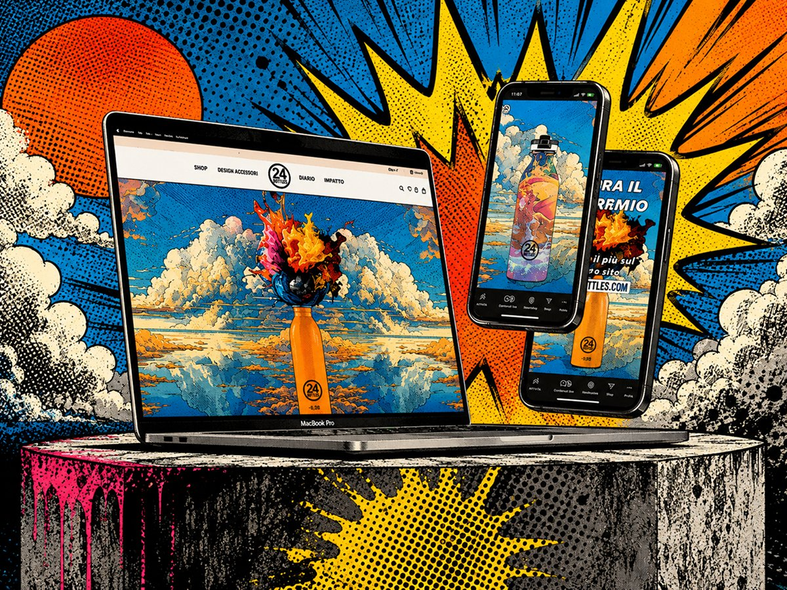
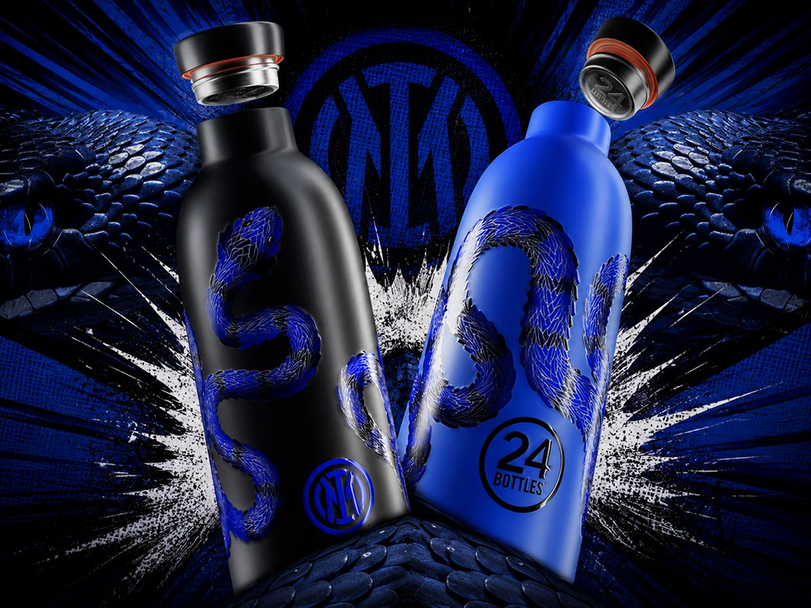
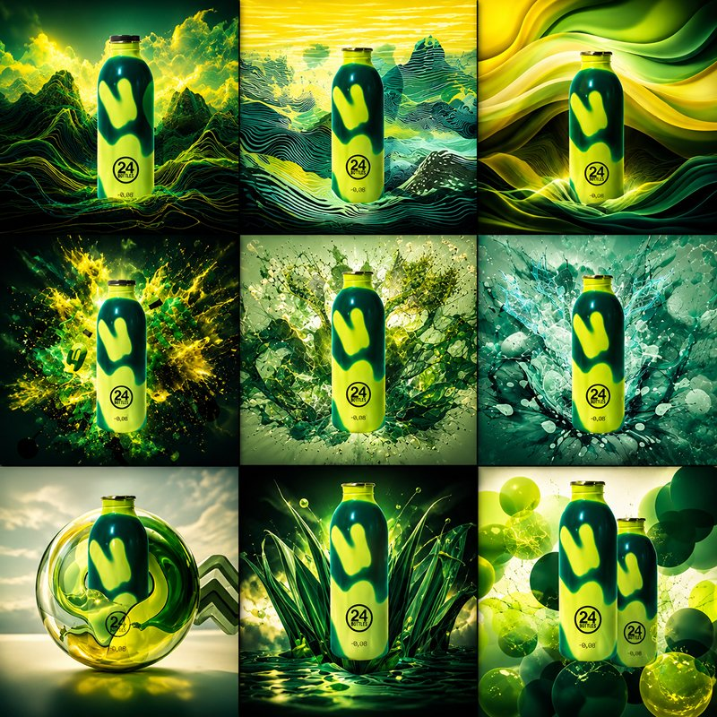
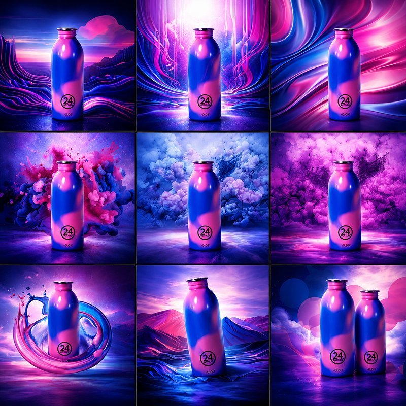

24 Bottles
Piano editoriale e content design per un brand italiano di prodotti sostenibili

Un test progettuale diventato progetto vero.
Questo lavoro nasce come prova di selezione per il ruolo di Graphic e Visual Designer in 24 Bottles — azienda bolognese di prodotti legati alla sostenibilità. Sono arrivato alla prova in sede come unico candidato. Il brief richiedeva due campagne distinte: una sul tema della sostenibilità, una sul lancio di ReAct, nuova linea con vernice reattiva alla temperatura del contenuto.
Il progetto non ha generato un'assunzione — ha generato un lavoro di cui sono soddisfatto.
"La borraccia come icona pop. Prima still life alla Andy Warhol, poi supereroe di un fumetto che salva il mondo dalla catastrofe dei rifiuti."







ReAct — quando il prodotto è già la comunicazione
ReAct è una linea di borracce con vernice reattiva alla temperatura del contenuto — il colore cambia in base a ciò che contieni. Il visual di campagna non doveva spiegare la tecnologia: doveva mostrarla.
La sfida era rendere visibile qualcosa che esiste solo nel momento dell'uso — un prodotto che si racconta da solo se lo guardi nel momento giusto.